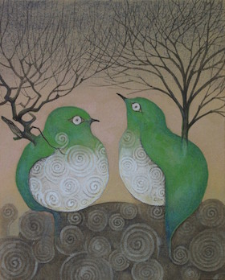
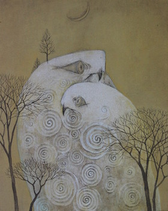
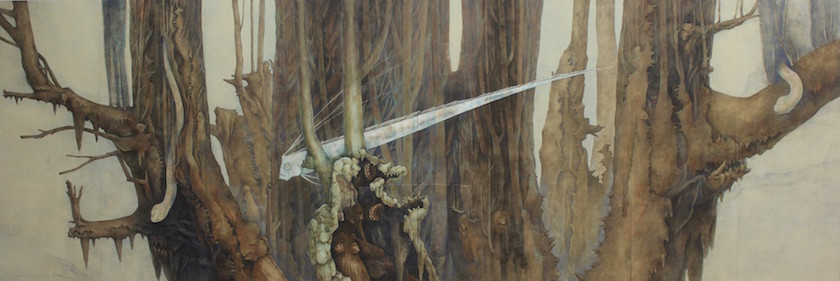
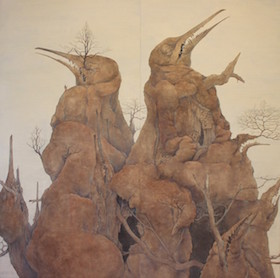
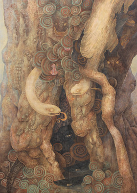
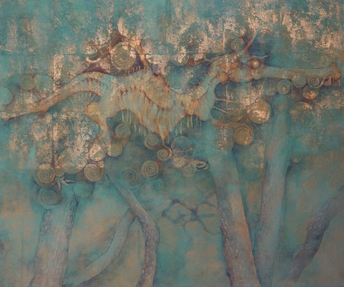
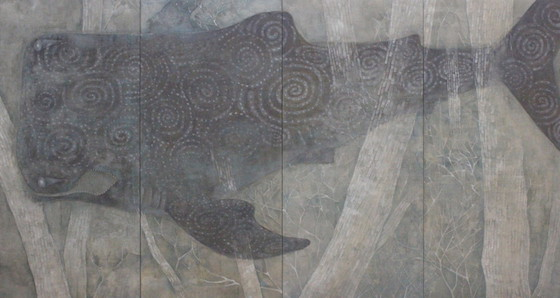
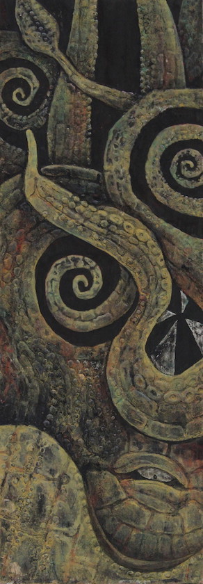
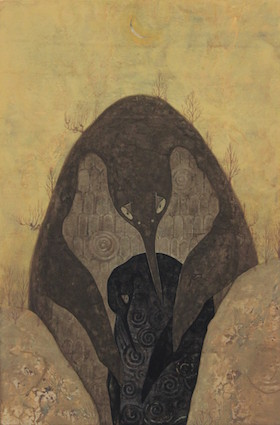
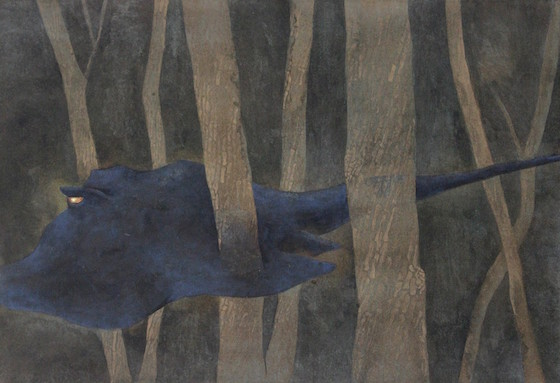

「神話」や「宇宙」、「原始芸術」のようなものを、日本画材や土などを使い動物などをモチーフとして制作している。
世界の「神話」「原始芸術」からは人間の本能とも言えるような未分化な感覚を感じ取ることができる。それは、自然に対する畏敬の念のような形で世界中の人々の意識下に共通して存在するのではないだろうか。
私は世界が分化する前の世界観をイメージし、人間の根源的に持っている美的感覚や神秘的感覚を呼び覚ますことのできるような作品を描きたい。
作品











略歴
2008
- 神奈川県立神奈川総合高等学校 卒業
2009
- 多摩美術大学絵画学科日本画専攻 入学
2010
- グループ展「有頂展！」CCAAアートプラザ ランプ坂ギャラリー
- 第46回 神奈川県美術展 – 入選
2011
- 第47回 神奈川県美術展 – 入選
2012
- 個展「SHIN IGUCHI EXHIBITION ～記憶の星たち～」アートギャラリー 石（銀座）
- 第48回 神奈川県美術展 – 入選
- 第12回 福知山市 佐藤太清賞公募美術展 – 入選
2013
- SWITCH ART 展 アートギャラリー 石（銀座）
- 多摩美術大学日本画卒業制作展 東京銀座画廊
- 東京五美術大学連合卒業・修了制作展 国立新美術館
- 多摩美術大学美術学部絵画科日本画専攻 卒業
- 多摩美術大学博士前期課程美術研究科絵画専攻日本画研究領 入学
- Polaris展 銀座スルガ台画廊
- 第49回 神奈川県美術展 – 入選
- 第１回 次世代アーティストイレブン展 かさぎ画廊鎌倉
- 第４回 「こめつぶつぶより」展 山猫軒（越生）
- Expected Artists 2013 Shonandai MY Gallery (六本木)
- 第一回 チャリティー展〜Art for people〜 純画廊（銀座）
2014
- 雪舟国際美術協会日本画選抜特別展 東京都美術館
- 「ポートフォリオ」ってなんだ？展 デッサン｜dessin（目黒区）
- 第一回 カナソウトリエンナーレ 主催 横浜市民ギャラリーあざみ野
- 現代鳥獣戯画展 かさぎ画廊鎌倉
- Octet 2014 多摩美術大学大学院日本画領域２年生展 佐藤美術館
- 第50回 神奈川県美術展 – 入選
- 第一回 カナソウプチエンナーレ 主催 神奈川総合高等学校
- 第５回 「こめつぶつぶより」展 山猫軒（越生）
- A GROUP SHOW OF JAPANESE ARTISTS IN COLLABORATION WHITH STUDIO ART & GALLERY KASAGI かさぎ画廊 インド展
- 井口信 展（個展） Shonandai MY Gallery（六本木）
2015
- 平成26年 第38回東京五美術大学連合卒業・修了制作展 国立新美術館
- 個展 井口信修了制作展 -utopia- GALLERY ART POINT（銀座）
- 第二回 飛の会 銀座井上画廊